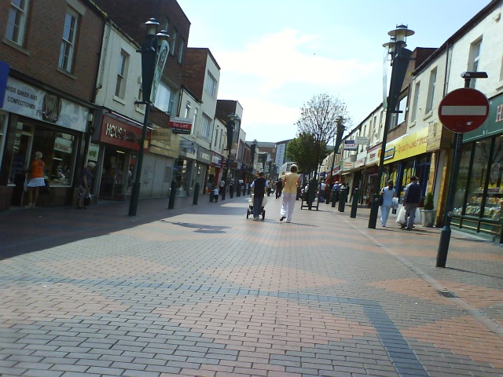
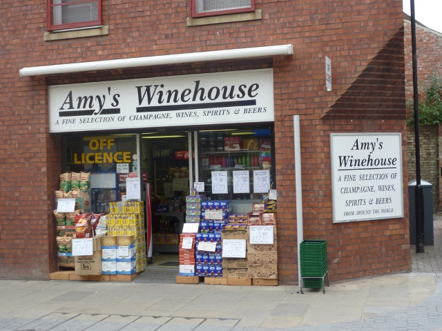

Spectral Figure Found In Mowbray Park
Spirit Eyes Cannon
The Ghost of General Havlock appears to be considering using the canon left in Mowbray park - in protest at moving his bin collection to Tuesdays instead of Thursday.
The cannon, left pointing at the civic centre in case of another infestation of the Rage virus seems to be the target of the Victorian Millitary man Shade's attentions.
When pressed, the wraith said "I'm buried at Lucknow, so getting here to put the bins out for Tuesday is impossible, the connecting flights just aren't there."
Queen Victoria, Greyfriars Bobby and Sunderland City council were unavailable for comment.

Blandford Street Found "Wonky"
Keen shoppers were underterred as Blandford Street at the heart of the city was seen to be a bit skew-wiff.From Herbet Brown's to Debenhams, the whole street appeared tilted off to the rught somehow.
We contacted a spokesperson for H&T Pawnbrokers said "To be honest, we haven't noticed anything unusal outside. There has been no drop off in trade, punters are here putting their wedding rings on tick just a desperately as usual."
Our roving photohrapher, Nathanial Ventricle, took this shocking image moments after picking up his new tripod form Chas Eagle's and Sons. Nathanial said "You know what's odd, the people on Blandford Street look wonky too- normally they'd be upri...oh.. wait..."

Amy's Winehouse Urged into Rehab
Amy's Winehouse has said "no no no" to calls to enter rehab after complaints of rowdy behaviour about the songstressly-named offy.
An neighbour, who wishes to remnain anonymous, has seen Amy's Winehouse selling the following in broad daylight:
- Fine Wines & Champagnes
- Rough Ciders & Spirits
- Terry's Chocolate Orange, which no one ever seems to buy
Amy's Winehouse ain't got the time to make a comment, adding the retail outlet's daddy thinks she's fine.